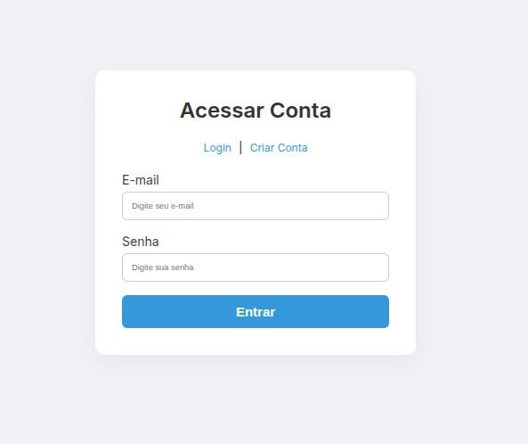
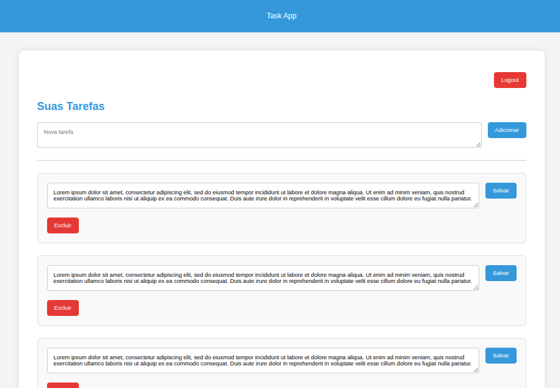
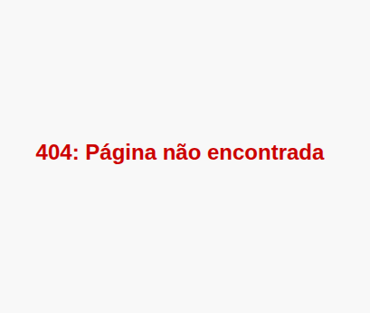
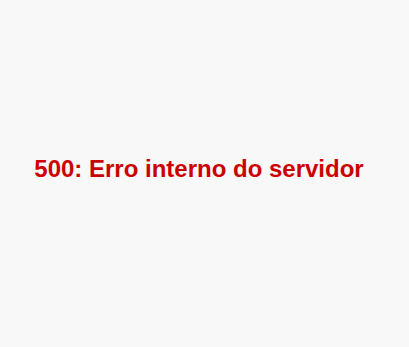
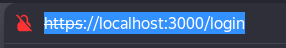
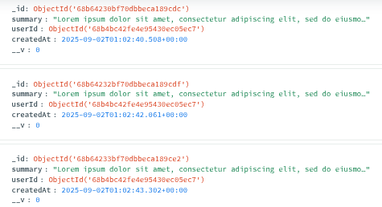
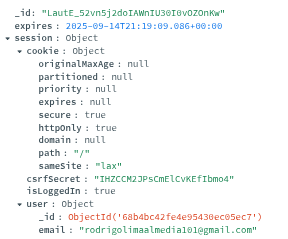

Login
Login com validação dos campos de email e senha. Apenas usuários válidos podem ser criados. Cada usuário visualiza apenas seus próprios dados.
Menu
CRUD com validação. Não é o foco principal da aplicação, mas está implementado.
Erro 404
Página exibida quando o usuário acessa um endpoint inexistente.
Erro 500
Página exibida quando ocorre um erro interno no servidor.
HTTPS
Simulação local de HTTPS com uso de Helmet para adicionar headers de segurança.
Tasks
Campo de texto simples com registro do usuário que realizou a edição.
Session / CSRF
Proteção contra CSRF em requisições que alteram dados.